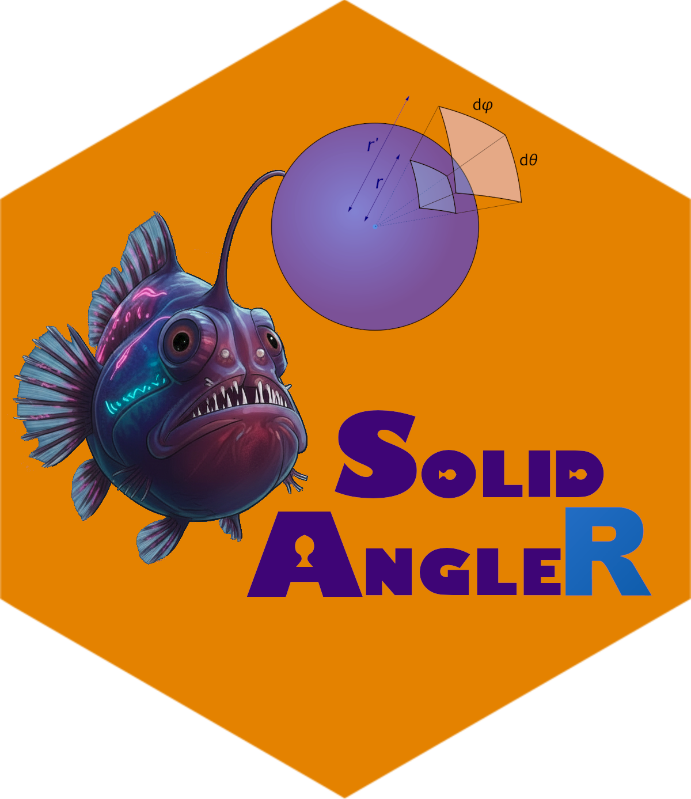

SolidAngleR 
Computing normalized solid angles of polyhedral cones in arbitrary dimensions


SolidAngleR provides comprehensive methods for computing normalized solid angles of polyhedral cones in arbitrary dimensions, including closed formulas for low dimensions, hypergeometric series, tridiagonal series, decomposition methods, multivariate normal integration and spanning tree methods for extreme ray computation. Implements advanced Monte Carlo (MC) approaches using rejection sampling for random point assignments to complex cone intersections, and Rcpp-based novel O(n) MC algorithms for generating uniform random vectors using the Box-Muller/Marsaglia method for complete n-dimensional spheres coverage, and the incomplete beta function plus Givens rotation for full coverage within spherical caps.
Key features
The package provides two main capabilities. For solid angle computation, it offers multiple computational methods including closed formulas, hypergeometric series, decomposition, multivariate normal integration, and Monte Carlo approaches; it works from 2D to high-dimensional spaces; and it automatically selects the appropriate algorithm based on cone properties.
For uniform sphere and cone sampling, the package implements an O(n) cone sampling algorithm that generates uniform random vectors directly within n-dimensional cones, eliminating the exponential cost of naive rejection sampling. It uses the Box-Muller/Marsaglia method for complete sphere coverage and supports hollow cones (annular regions between two angles). Arbitrary cone orientations are handled via efficient O(n) Givens rotations, and built-in uniformity tests (Kolmogorov-Smirnov and chi-squared) provide statistical validation.
See the accompanying Vignettes for a comprehensive overview of the mathematical theory of solid angles, uniform sampling on spheres, and extensive testing and applications of the functions in the package.
Installation
# Check if devtools is already installed. If not, install it.
if (!requireNamespace("devtools", quietly = TRUE)) {
install.packages("devtools")
}
# Install from GitHub (development version)
devtools::install_github("robustecologies/SolidAngleR")
# Or install locally
devtools::install()
# Or install from CRAN
install.packages("SolidAngleR")Mathematical background
Normalized solid angle
The normalized solid angle measure \(\tilde{\Omega}_n(C)\) of a polyhedral cone \(C \subseteq \mathbb{R}^n\) quantifies the proportion of \(n\)-dimensional space occupied by the cone. Formally:
\[\tilde{\Omega}_n(C) = \frac{\text{vol}_{n-1}(C \cap S^{n-1})}{\text{vol}_{n-1}(S^{n-1})}\]
where \(S^{n-1}\) is the unit sphere in \(\mathbb{R}^n\).
In 2D (\(n=2\)), \(\tilde{\Omega}_2 = \frac{\theta}{2\pi}\), where \(\theta\) is the planar angle in radians. In 3D (\(n=3\)), \(\tilde{\Omega}_3 = \frac{\Omega}{4\pi}\), where \(\Omega\) is the standard solid angle in steradians. In n-D, \(\tilde{\Omega}_n\) represents the fraction of the unit hypersphere surface covered by the cone.
Key properties
The normalized solid angle has several fundamental properties. Its range is \(\tilde{\Omega}_n(C) \in [0, 1]\); for an orthant (axes-aligned cone), \(\tilde{\Omega}_n(\mathbb{R}^n_{\geq 0}) = \frac{1}{2^n}\); for full space, \(\tilde{\Omega}_n(\mathbb{R}^n) = 1\); and for an empty cone, \(\tilde{\Omega}_n(\emptyset) = 0\).
Quick start
Solid angle computation
library(SolidAngleR)
# Example 1: 3D orthogonal cone (octant)
V <- diag(3)
omega <- compute_solid_angle(V)
print(omega) # 0.125 (1/8 of space)
#> [1] 0.125
# Example 2: 2D cone
v1 <- c(1, 0)
v2 <- c(1, 1) / sqrt(2)
V <- cbind(v1, v2)
omega <- compute_solid_angle(V)
print(omega) # 0.125 (45° / 360°)
#> [1] 0.125
# Example 3: Diagnose cone properties
diag <- diagnose_cone(V)
print(diag)
#> Cone diagnostic report
#> ======================
#>
#> Dimension: 2
#> Linearly independent: ✓ Yes
#> Associated matrix PD: ✓ Yes
#> Tridiagonal structure: ✓ Yes
#>
#> Eigenvalues: 1.707107, 0.292893
#> Minimum eigenvalue: 0.292893
#>
#> Suggested method: formula (closed form available) ✓
# Example 4: Visualize general 3D cone
# (Interactive plotly visualization)
# fig <- plot_cone_3d(V, color = "orange")
# figUniform cone sampling optimized with C++
# Example 1: Generate uniform samples on 3D spherical cap
# Now uses fast C++ implementation for massive sampling
mu_hat <- c(0, 0, 1) # Cone axis (z-axis)
theta0 <- pi/4 # 45-degree half-angle
n_samples <- 1000
samples <- generate_cone_samples(n_samples, mu_hat, theta0)
sample_info <- data.frame(
n_samples = n_samples,
dimension = paste(nrow(samples), "x", ncol(samples))
)
knitr::kable(sample_info)| n_samples | dimension |
|---|---|
| 1000 | 3 x 1000 |
# Example 2: Verify uniformity
set.seed(42)
samples_test <- generate_cone_samples(10000, c(0, 0, 1), pi/3)
results <- verify_cone_uniformity(samples_test, c(0, 0, 1), pi/3)
uniformity_table <- data.frame(
test = c("KS p-value", "Chi-squared p-value"),
value = c(results$ks_pvalue, results$chi_pvalue)
)
knitr::kable(uniformity_table, digits = c(NA, 4))| test | value |
|---|---|
| KS p-value | 0.4511 |
| Chi-squared p-value | 0.1082 |
# Example 3: High-dimensional cone (100D with 10-degree half-angle)
mu_hat_100d <- c(rep(0, 99), 1)
sample_100d <- generate_cone_sample(mu_hat_100d, pi/18, method = "rejection")
norm_table <- data.frame(
quantity = "100D sample norm",
value = sqrt(sum(sample_100d^2))
)
knitr::kable(norm_table, digits = c(NA, 10))| quantity | value |
|---|---|
| 100D sample norm | 1 |
# Example 4: Hollow cone (annular region)
sample_hollow <- generate_hollow_cone_sample(c(1, 0, 0), pi/6, pi/3)
angle <- acos(sample_hollow[1])
hollow_table <- data.frame(
angle_deg = angle * 180 / pi
)
knitr::kable(hollow_table, digits = 2)| angle_deg |
|---|
| 56.03 |
Available methods
1. Unified interface
The compute_solid_angle() function automatically selects the best method:
V <- diag(4)
omega <- compute_solid_angle(V, method = "auto")
#> ✓ Using tridiagonal series methodAvailable methods: - "auto" - Automatic selection (recommended) - "formula" - Closed formulas (2D/3D only) - "series" - Hypergeometric series (requires positive definite) - "tridiagonal" - Optimized for tridiagonal cones - "decomposition" - Universal method (any cone)
2. Specialized functions
2D cones
# Direct angle computation
v1 <- c(1, 0)
v2 <- c(0.8, 0.6)
omega <- solid_angle_2d(v1, v2)
omega
#> [1] 0.10241643D cones
# Euler-Lagrange formula
v1 <- c(1, 0, 0)
v2 <- c(0, 1, 0)
v3 <- c(0, 0, 1)
omega <- solid_angle_3d(v1, v2, v3)
omega
#> [1] 0.125Geometric shapes
# Circular cone
theta <- pi/3 # Apex half-angle
omega <- solid_angle_cone(theta)
# Intersecting cones
theta1 <- pi/3
theta2 <- pi/4
alpha <- pi/6 # Separation angle
omega <- solid_angle_intersecting_cones(theta1, theta2, alpha)
omega
#> [1] 0.1241727Monte Carlo estimation
For complex geometric regions or when analytical formulas are unavailable, Monte Carlo integration provides a powerful alternative with quantified uncertainty:
#### Define a complex region: intersection of two cones ####
complex_region_test <- function(point) {
#### First cone: axis along z, 60\u00B0 opening ####
cone1 <- point[3] >= cos(pi/3)
#### Second cone: tilted axis, 45\u00B0 opening ####
axis2 <- c(1, 1, 1) / sqrt(3) # Tilted axis
angle_from_axis <- acos(sum(point * axis2))
cone2 <- angle_from_axis <= pi/4
#### Intersection of both cones ####
return(cone1 && cone2)
}
#### Monte Carlo estimation with uncertainty quantification ####
result <- solid_angle_monte_carlo(complex_region_test, n_samples = 200000, seed = 42)
mc_table <- data.frame(
estimate_sr = result$estimate,
std_error_sr = result$std_error,
ci_lower = result$estimate - 1.96 * result$std_error,
ci_upper = result$estimate + 1.96 * result$std_error,
omega_normalized = result$estimate / (4 * pi),
percent_sphere = 100 * result$fraction_inside
)
knitr::kable(
mc_table,
digits = c(6, 6, 6, 6, 4, 2),
col.names = c("estimate (sr)", "SE (sr)", "CI lower", "CI upper",
"omega (normalized)", "percent of sphere")
)| estimate (sr) | SE (sr) | CI lower | CI upper | omega (normalized) | percent of sphere |
|---|---|---|---|---|---|
| 0.964595 | 0.00748 | 0.949933 | 0.979256 | 0.0768 | 7.68 |
Monte Carlo integration works for arbitrary complex regions without requiring analytical formulas, achieves dimension-independent convergence at rate \(O(N^{-1/2})\), provides quantified uncertainty through standard error estimation, scales efficiently via embarrassingly parallel computation for massive sample sizes, and serves as an ideal validation tool for analytical methods.
Common workflows
Workflow 1: Ecological feasibility domain
library(SolidAngleR)
# Community interaction matrix (4 species)
S <- 4
alpha <- matrix(runif(S * S, -1, 0), S, S)
diag(alpha) <- -1
# Compute feasibility domain size
result <- omega(alpha)
feas_table <- data.frame(
omega = result$omega,
omega_scaled = result$omega_scaled
)
knitr::kable(feas_table, digits = 6)| omega | omega_scaled |
|---|---|
| 0.001536 | 0.197963 |
Interpretation: omega represents the fraction of parameter space where all species can coexist with positive abundances.
Workflow 2: Computational geometry
# Define polyhedral cone by generator matrix
V <- matrix(c(
1, 0.8, 0.2,
0, 0.6, 0.3,
0, 0, 0.9
), nrow = 3)
# Analyze cone properties
diagnosis <- diagnose_cone(V)
print(diagnosis)
#> Cone diagnostic report
#> ======================
#>
#> Dimension: 3
#> Linearly independent: ✓ Yes
#> Associated matrix PD: ✓ Yes
#> Tridiagonal structure: ○ No
#>
#> Eigenvalues: 1.697606, 1.145699, 0.156694
#> Minimum eigenvalue: 0.156694
#>
#> Suggested method: formula (closed form available) ✓
# Compute solid angle
omega <- compute_solid_angle(V, method = "auto")
geom_table <- data.frame(omega_normalized = omega)
knitr::kable(geom_table, digits = 6)| omega_normalized |
|---|
| 0.047913 |
Workflow 3: Method comparison
V <- diag(4)
# Compare different computational approaches
methods <- c("series", "decomposition")
results <- sapply(methods, function(m) {
compute_solid_angle(V, method = m)
})
#> ○ Decomposed into 1 cones
# Add omega() method
results <- c(results, omega = omega(V)$omega)
method_table <- data.frame(
method = names(results),
omega = as.numeric(results)
)
knitr::kable(method_table, digits = 6)| method | omega |
|---|---|
| series | 0.0625 |
| decomposition | 0.0625 |
| omega | 0.0625 |
# All should be approximately 0.0625 (1/16)Performance tips
For optimal performance, consider dimension and cone structure when selecting methods. For low dimensions (\(n \le 3\)), use method = "formula" as the fastest option; for positive definite cones, use method = "series" for efficient computation; for tridiagonal structure, use method = "tridiagonal" with optimized algorithms; for any cone type, use method = "decomposition" as a universal approach; for quick estimates, use solid_angle_monte_carlo() for approximate results; and for ecological applications, use omega() as a proven, reliable method.
Method selection guide
| Cone property | Dimension | Recommended method | Function |
|---|---|---|---|
| Any | 2 | Closed formula | solid_angle_2d() |
| Any | 3 | Euler-Lagrange | solid_angle_3d() |
| Positive definite | Any | Hypergeometric series | method = "series" |
| Tridiagonal V’V | Any | Tridiagonal series | method = "tridiagonal" |
| Any | Any | Decomposition | method = "decomposition" |
| Any | Any | Multivariate normal | omega() |
| Complex geometry | 3 | Monte Carlo | solid_angle_monte_carlo() |
Examples
Example 1: Simple octant
# One octant of 3D space
V <- diag(3)
omega <- compute_solid_angle(V)
# Result: 0.125 (exactly 1/8)Example 2: Tridiagonal cone
# Create cone with specified angles (radians) that yield a PD tridiagonal Gram matrix
angles <- c(1.5, 1.5, 1.5)
V <- create_tridiagonal_cone(angles)
omega <- compute_solid_angle(V, method = "tridiagonal")Example 3: Circular cone
# 60-degree cone (half-angle)
theta <- pi/3
omega <- solid_angle_cone(theta)
# Result: ~0.0669 (normalized fraction of the sphere)Example 4: High-dimensional orthogonal cone
# 5D orthant
V <- diag(5)
omega <- compute_solid_angle(V)
#> ✓ Using tridiagonal series method
# Result: 0.03125 (exactly 1/32)Version 0.1.0 status
What’s working
All core functionality is operational. The test suite passes locally across all major methods. New features include n-dimensional hypergeometric series (n > 3), C++ (Rcpp) optimization for cone sampling and rotations, and interactive 3D cone visualization with plot_cone_3d(). The hypergeometric series for n=2,3 uses the correct gamma function formulation, tridiagonal series optimization provides exponential speedup, and decomposition methods handle arbitrary cones. All geometric formulas for circular cones, polyhedral cones, and intersections are implemented, along with multivariate normal integration for feasibility domains and comprehensive documentation across 6 detailed vignettes.
Critical bugs have been fixed, including gamma function operator precedence (which was causing ~10x errors), geometric function normalization (all functions now return values in [0,1]), names attribute cleanup in return values, and vignette compilation errors.
Known limitations (planned for v0.2.0)
The decomposition method has a recursion issue where some random cone configurations may trigger stack overflow; this affects method = "auto" with certain non-positive-definite cones, and the workaround is to use method = "series" for known positive-definite cones. Additionally, some non-orthogonal tridiagonal cones may exhibit slow convergence requiring larger max_terms values; results remain correct, but convergence can be slower when consecutive dot products are large.
Diagnostic tools
The diagnose_cone() function provides detailed cone analysis:
V <- matrix(rnorm(9), nrow = 3)
diag <- diagnose_cone(V)
print(diag)
#> Cone diagnostic report
#> ======================
#>
#> Dimension: 3
#> Linearly independent: ✓ Yes
#> Associated matrix PD: ✓ Yes
#> Tridiagonal structure: ○ No
#>
#> Eigenvalues: 1.818378, 1.056231, 0.125391
#> Minimum eigenvalue: 0.125391
#>
#> Suggested method: formula (closed form available) ✓The output includes the cone dimension, positive definiteness status of the associated matrix, tridiagonal structure detection, and the recommended computational method.
Theoretical foundations
This package implements algorithms from multiple sources. Ribando [1] provides the hypergeometric series method for measuring solid angles beyond dimension three. Fitisone and Zhou [2] develop decomposition and tridiagonal methods for polyhedral cones. Mazonka [3] derives geometric formulas for conical surfaces, polyhedral cones, and intersecting spherical caps. Malekmohammadi and Mostafaee [4] contribute spanning tree methods for obtaining extreme rays of special cones.
[1] Ribando, J. M. (2006). Measuring solid angles beyond dimension three. Discrete & Computational Geometry, 36(3), 479-487. DOI: 10.1007/s00454-006-1253-4
[2] Fitisone, A., & Zhou, Y. (2023). Solid angle measure of polyhedral cones. arXiv:2304.11102 [math.CO]. URL: https://arxiv.org/abs/2304.11102
[3] Mazonka, O. (2012). Solid angle of conical surfaces, polyhedral cones, and intersecting spherical caps. arXiv:1205.1396 [math.MG]. URL: https://arxiv.org/abs/1205.1396
[4] Malekmohammadi, N., & Mostafaee, A. (2017). Obtaining all extreme rays of a special cone using spanning trees in a complete digraph: application in DEA. Journal of the Operational Research Society, 69(3), 465-472. DOI: 10.1057/s41274-017-0265-9
Documentation and vignettes
The package includes comprehensive vignettes with mathematical theory and working examples. Access them with:
# View available vignettes
vignette(package = "SolidAngleR")
# Open specific vignette
vignette("1.theoretical-analysis", package = "SolidAngleR")Available vignettes:
-
Theoretical Analysis (
vignette("1.theoretical-analysis", package = "SolidAngleR"))- Mathematical foundations of solid angles
- Derivations of formulas for 2D and 3D cones
- Overview of computational approaches
-
Series and Decomposition (
vignette("2.fitisone-zhou-methods", package = "SolidAngleR"))- Hypergeometric series methods (Ribando)
- Tridiagonal series optimization
- Brion-Vergne decomposition for general cones
-
Geometric Methods (
vignette("3.mazonka-geometric-methods", package = "SolidAngleR"))- Closed-form solutions for circular cones and segments
- Analytical intersection of two cones
- Interactive 3D visualizations with plotly
-
Monte Carlo Methods (
vignette("4.monte-carlo-methods", package = "SolidAngleR"))- Convergence analysis and error estimation
- Handling complex geometric regions
- Validation against analytical results
-
Uniform Sphere Sampling (
vignette("5.uniform-sphere-sampling", package = "SolidAngleR"))- O(n) algorithm for sampling within cones
- Comparison with rejection sampling
- Applications in directional statistics and ray tracing
Getting help
# Function documentation
?compute_solid_angle
?omega
?diagnose_cone
# Package overview
?SolidAngleR
# List all functions
ls("package:SolidAngleR")Contributing
Contributions are welcome. You can report bugs at https://github.com/robustecologies/SolidAngleR/issues, suggest new features, or submit pull requests.
Disclaimer
This package is the original creation of the author in all conceptual, theoretical, and design aspects. Implementation was assisted by Anthropic’s Claude Code v.2 (Opus 4.5) to streamline package development. All original ideas, creativity, and scientific contributions belong to the author, who maintains full responsibility for the package’s correctness and reliability. While all code has been thoroughly reviewed and tested, users are encouraged to report any issues through the package’s issue tracker.